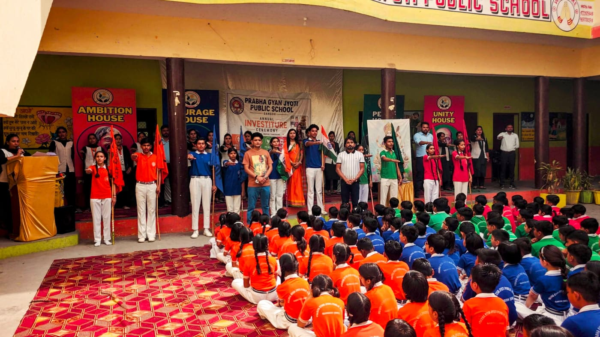

Classrooms
Well-arranged classrooms support board explanation, notebook work, reading practice, oral questioning, and disciplined daily routines.
Teachers focus on concept clarity, handwriting, revision, and individual attention.
Facilities
Our facilities support classroom learning, activities, games, events, and confident everyday school life.
Well-arranged classrooms support board explanation, notebook work, reading practice, oral questioning, and disciplined daily routines.
Teachers focus on concept clarity, handwriting, revision, and individual attention.Students receive age-appropriate exposure to basic computer skills, digital awareness, and practical technology use.
Computer learning helps students build confidence for modern study habits.Outdoor games, races, drills, and teamwork activities keep students active, energetic, and confident.
Sports build discipline, fitness, cooperation, and healthy competition.Morning assembly, house activities, oath ceremonies, celebrations, and stage events help students express themselves.
Participation develops leadership, confidence, values, and public speaking.